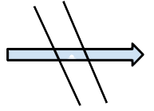
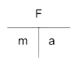
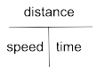
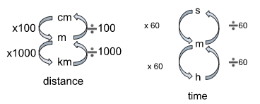

Welcome to the Physics Revision lab
Forces
~~~~~~~~~~~~~~~~~~~
What is a force?
You cannot see forces but you can see it’s effects- it changes either the shape, the speed and or the direction of an object
A force can be a push or a pull force
A force can be an applied or a reaction force e.g. a push force applied to a pushchair, or a reaction force supposets a skater; opposing the pull of gravity
Vectors
are also known as force diagrams
The arrows on a vector must touch the object
Vectors can be either horizontal or vertical
Net force- if the arrows are going in the same direction then add them together, if they’re going away from each other then you subtract the value
If the forces are equal then use two lines to strikethrough the arrow

Newton's first law of motion: An object at rest stays at rest and an object in motion stays in motion with the same speed and in the same direction unless acted upon by an unbalanced force.
Balanced or unbalanced forces?
Opposing forces of an object can either be balanced or unbalanced
Stationary = balanced
Moving at a constant speed= balanced
Accelerating = unbalanced
Decelerating = unbalanced
Measuring
Force is measured in Newtons and is named after Sir Isaac Newton, the unit is written as a capital “N”
Mass is a constant and is measured in kg’s
Weight is measured in N
Torque
 It’s a.k.a movement
It’s a.k.a movement
The turning effect caused by a force
The force is applied with a lever that pivots around the pivot
Torque = applied force x length of the lever
The unit is Nm (Newton metres)

Force and Acceleration

Acceleration = force ➗ mass
Force = mass x acceleration or F=ma
Speed
The unit metres per second measures speed and is written as (ms-¹)
Speed = distance ➗ time
Distance = speed x time

F = force (N)
m = mass (kg)
a = acceleration (ms-¹)
T = torque (Nm)
d = distance (cm, m, km)
N = weight(N)

Electricity
~~~~~~~~~~~~~~~~~~~
What is electricity?
It is the flow of electrons through a conductor.
Circuits
When drawing a circuit the battery must always be at the top and in the middle
It can be a series (single path) or parallel (multiple path) circuit
Voltmeters are connected in parallel
You need to memorise circuit symbols
Measuring
Current is measured with an ammeter
Voltage is measured with a voltmeter
Resistance is measured with an ohmmeter
Ammeters and ohmmeters are connected in series. Voltmeters are connected in parallel
Multimeters measure all 3
Units
Current (I)= amps/ amperes (A)
Voltage = Volts (V)
Resistance = Ohms (Ω)
What is Static electricity?
Static electricity happens when there is a charge imbalance, this is typically caused by friction. Charges are balanced when atoms are neutral, when two surfaces are rubbed against each other they create friction causing electrons to jump to other atoms. One atom is now positively charged and one is negative a.k.a electrostatic charge
Circuit symbols

Conductors
Allow electrons to flow through wires or circuits easily.
Are usually metals, graphite is the only non-metal conductor
Insulators
They resist/ block the electric current from passing through them
Stop us from getting electrocuted when we touch the wires
Some examples: glass, rubber, wood and plastic
Voltage
Voltage is fixed- does not change
All voltage is consumed, no left over voltage
More resistance = more voltage consumed
All circuit components use at least some voltage
Voltage is what makes electrons flow in a circuit.
Resistance
Resistance is a measure of how much a component/ material reduces the current that flows through it
To measure a components resistance it has to be removed from the the circuit first
Series or parallel?
A series circuit is a circuit that only has 1 path for electrons to flow (see left example)
A parallel circuit is a circuit that has more than two paths, it can have as many as you want- it can even go to infinity… and beyond.